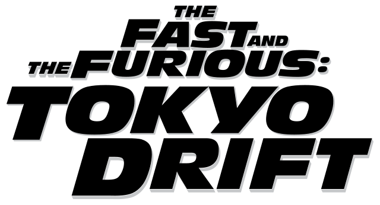

2006 | 1h 44m | Action, Crime, Thriller
The Fast and the Furious: Tokyo Drift is a high-octane action film that dives into the underground world of drift racing in Tokyo. Follow Sean Boswell as he navigates a new culture, forms unexpected alliances, and faces off against fierce rivals in heart-pounding races through the streets of Japan.
Director: Justin Lin
Producer: Neal H. Moritz
Starring: Lucas Black, Sung Kang, Nathalie Kelley, Brian Tee
© Universal Pictures